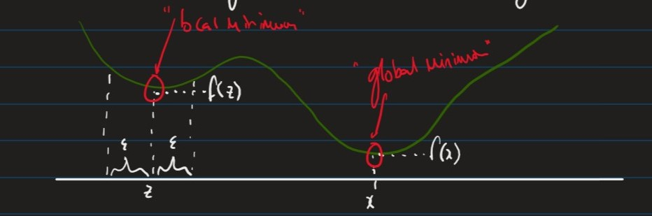

Lecture 2
Linear Regression Models

Cat Hearts example:
Experience $E$
- The dataset consists of $n$ data points
- $((x_1,y_1),…,(x_n,y_n)\in \R^d\times \R)$
- $x_i \in \R^d$ is the “input” for the $i^{th}$ data point as a feature vector with $d$ elements, $d$ being the # of dimensions in the feature space, in this case 1.
- $y_i \in \R$ is the “output” for the $i^{th}$ data point, in this case the weight of the corresponding cat heart.
Learning Task, $T$
- In this example, our task is: Linear Regression
- Find a “model”, i.e. a function:
- $f : \R^d \rightarrow \R$
- s.t. our future observations produce output “close to” the true output.
Linear Regression Model
- A linear regression model has the form:
- $f(x) = (\sum_{i=1}^{d}w_i \cdot x_i)+ b$
- where:
- $x \in \R^d$ is the input vector (feature)
- $w \in \R^d$ is the weight vector (parameters)
- $b \in \R$ is a bias (parameter)
- $f(x) \in \R$ is the predicted output
- In our cat example we have:
- $d=1$ as “body weight” is our only feature
- $b=0$ as from intuition we expect a cat of 0 weight to have a heart of 0 weight.
- Our model has one parameter: $w$
Performance Measure, $P$
- Want a function, $J(w)$ which quantifies the error in the predictions for a given parameter $w$

- The following empirical loss function, $J$ takes into account the errors $\forall n$ data points.
- $J(w) = (1/2N)\sum_{i=1}^N(y_i-wx_i)^2$
- where the summation term is squared so that:
- we ignore the sign
- we penalise large errors more
- To find the optimum weight, solve:
- $\frac{\delta J}{\delta w}$ = 0
Unconstrained Optimisation (Minimisation)
Given a continuous function:
- $f: \R^d \rightarrow \R$ , as our loss function
- an element $x \in \R^d$ is called:
- A global minimum of $f$ iff:
- $\forall y \in \R^d, f(x) \leq f(y) $
- A local minimum of $f$ iff:
- $\exists \epsilon > 0, \forall y \in \R^d$ if $\forall i \in {1,…,d} , | x_i - y_i | < \epsilon \implies f(x) \leq f(y)$

Theorem: For any continous function, $f: \R \rightarrow \R$, if $x$ is a local optimum, $f’(x) = 0$
Definition: The $1^{st}$ derivative of a function $f: \R \rightarrow \R$ is $f’(x) = \lim_{\Delta x \rightarrow 0}\frac{f(x+\Delta x) - f(x)}{\Delta x}$
Differentiation Rules
- $(cf(x))’ = cf’(x)$
- $(x^k)‘$ = $kx^{k-1}$, if $k \neq 0$
- $(f(x)+g(x))’ = f’(x) + g’(x)$
- $(f(g(x))’ = f’(g(x))g’(x))$ $\leftarrow$ chain rule
Approach 1: Ordinary least squares
- Optimise $J$ by solving $J’(w) = 0$
- $J(w) = \frac{1}{2N}\sum_{i=1}^N(y_i - wx_i)^2$
- $J’(w) = \frac{1}{N}\sum_{i=1}^{N}(wx_i - y_i)x_i$
- $J’(w) = 0$
- $\frac{1}{N}\sum_{i=1}^{N}(wx_i - y_i)x_i = 0$
- $w\sum_{i=1}^{N}(xi)^2 = \sum{i=1}^{N}x_iy_i$
- $w = \frac{\sum_{i=1}^{N}x_iyi}{\sum{i=1}^{N}x_i^2}$
- This only has one solution $\therefore$ a global minimum.
Approach 2: Gradient descent
- Often difficult / impossible to solve $J’(w) = 0$ for non-linear models with many parameters
Idea:
- Start with an initial guess
While $J’(w) \neq 0$:
- move slightly in the right direction
To make this viable we need to define:
- “what is the right direction?”
- “what is slightly?”

Attempt 1 (failed)
$ w \leftarrow initial \ weight $ repeat: if $J’(w) < 0 $ $ w \leftarrow w + \epsilon $ elseif $J’(w) > 0$ $w \leftarrow w - \epsilon$
- where $\epsilon$ is the learning rate set manually. (hyper-parameter)
Issue with this attempt:
- w may oscillate in the interval $[w{opt} - \epsilon, w{opt}+ \epsilon]$
- w fails to converge
Attempt 2: Gradient Descent (1D)
$ w \leftarrow initial \ weight $ repeat: if $J’(w) < 0 $ $ w \leftarrow w - \epsilon \cdot J’(w)$